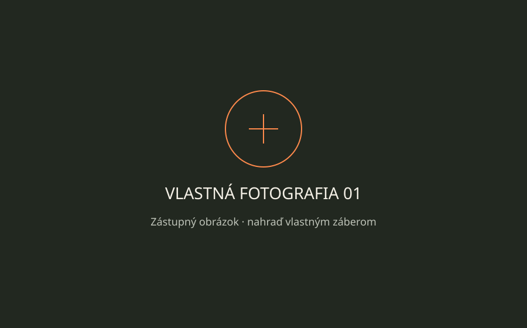
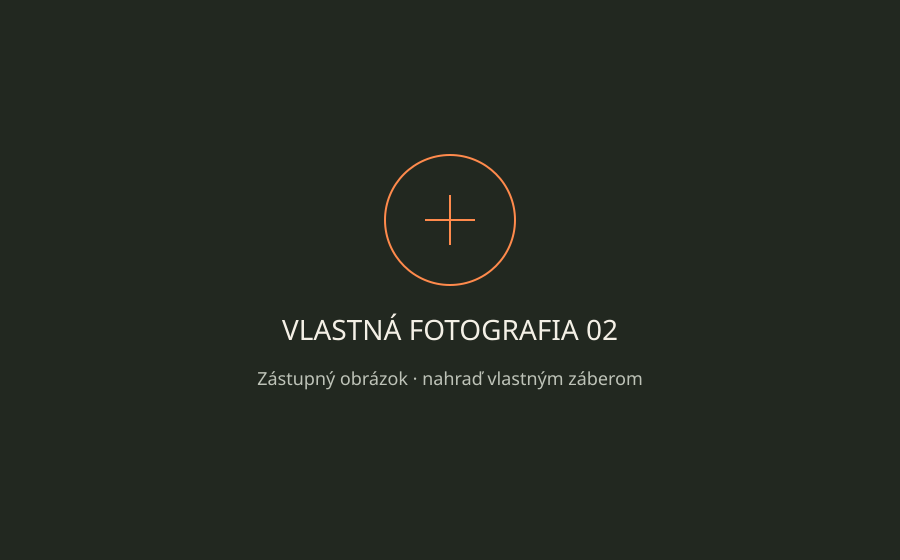

03 / GALÉRIA
ŠPORT V JEDNOM ZÁBERE.
Šesť fotografií zo sveta disku. Kliknutím otvoríš väčší náhľad.
Pohyb a súťaž
Technika zblízka a momenty, keď tréning dostáva výsledok.
Stopy histórie
Od antického ideálu pohybu po začiatky moderných olympijských hier.
TVOJA ČASŤ PRÍBEHU
Priestor pre vlastné fotografie.
Nasledujúce dve miesta sú zástupné obrázky, nie fotografie autora webu. Na splnenie školského zadania ich nahraď vlastnými zábermi.

